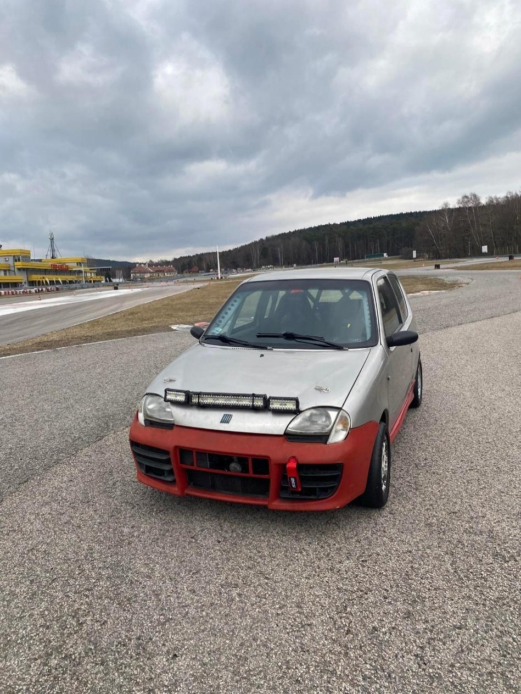
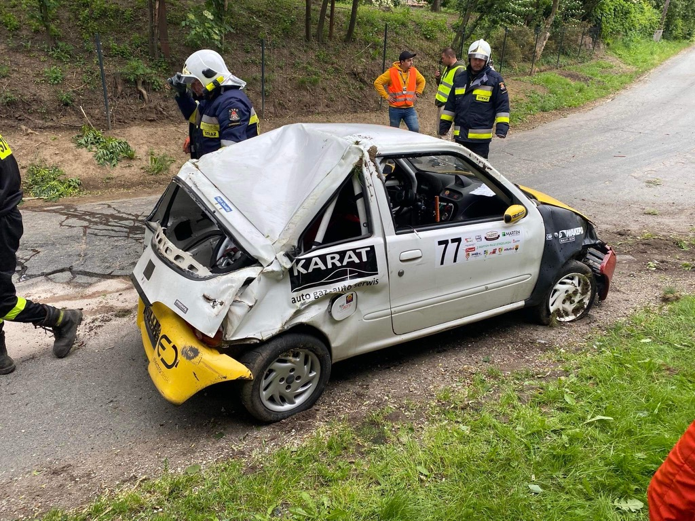
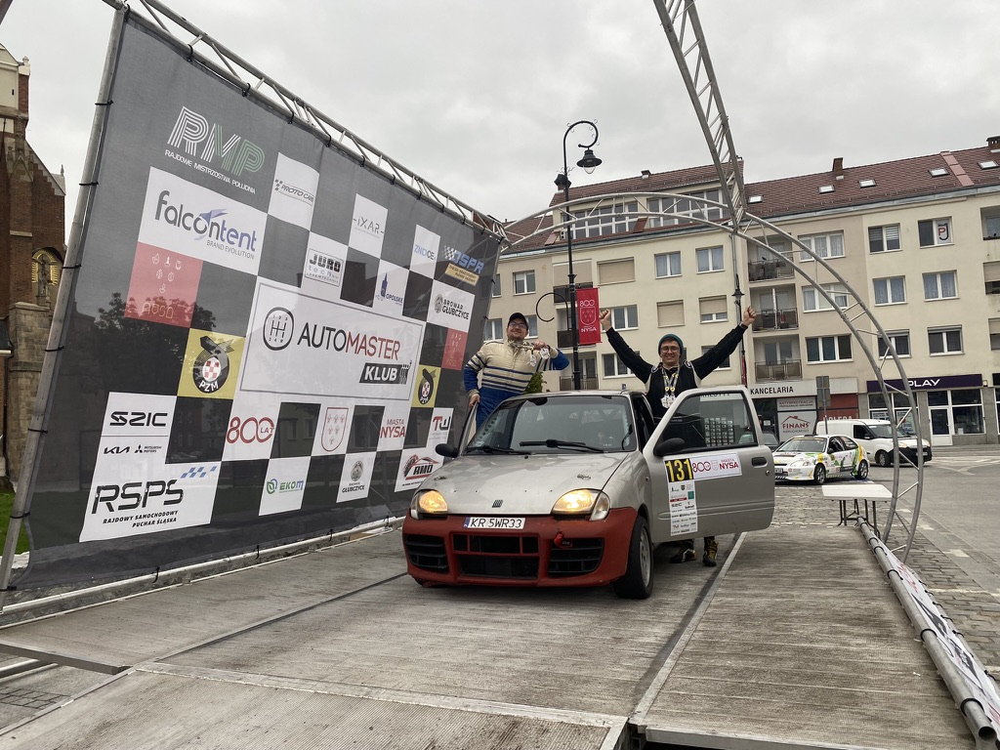
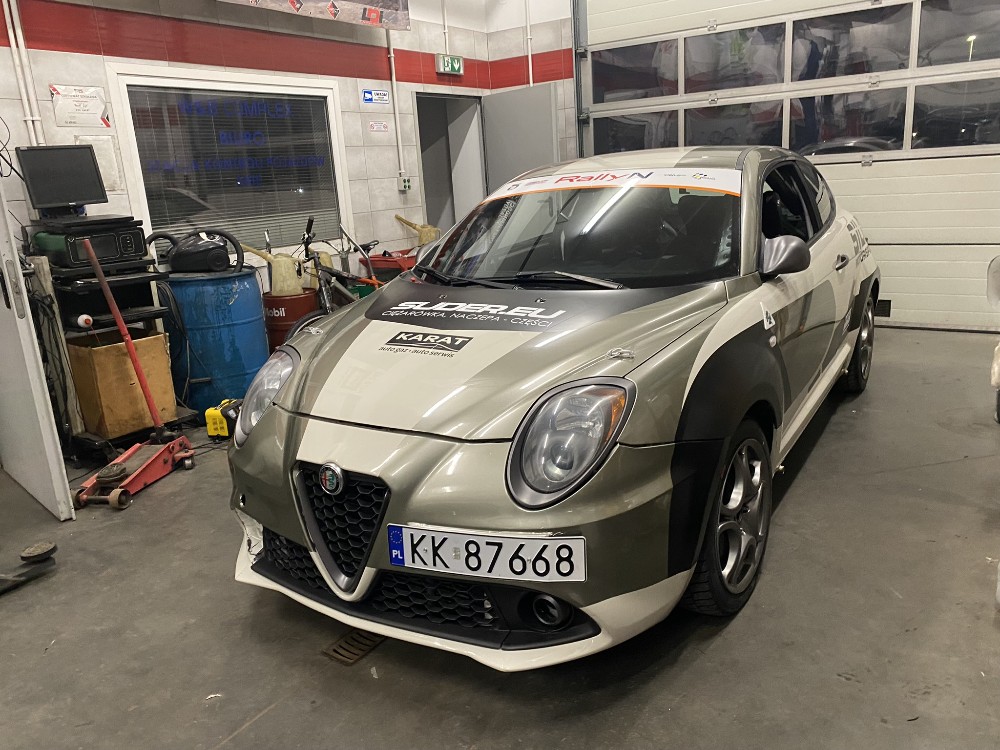
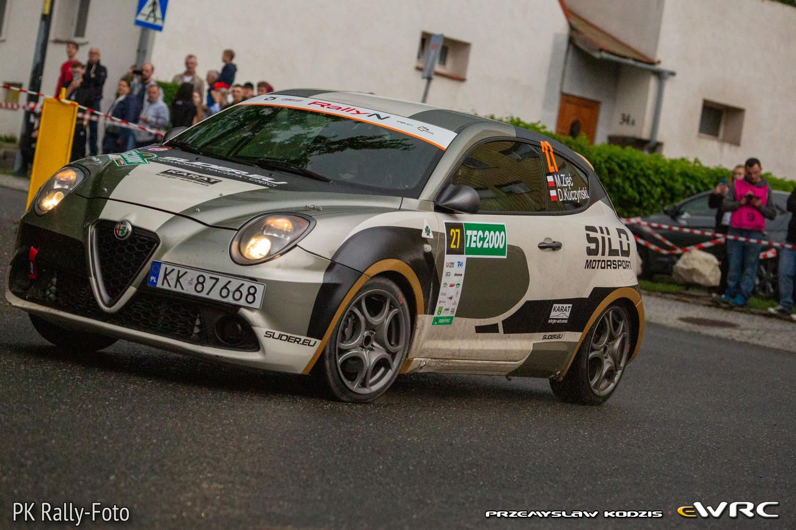

Rallying — engineering in practice
| Project ID | PRJ-003 |
|---|---|
| Client | Szybka Jazda · MiTo Rally |
| Period | 2019 — 2025 |
| Role | Engineer / Co-pilot |
From a blank sheet to a competition-ready car
For more than seven years I built and developed rally cars while competing as a co-driver. The journey began with a project undertaken with a friend while working at AGH Racing. We had no ready-made solution or specialist team to turn to. We had to learn, design, manufacture and verify most things ourselves.
Our professional debut came in 2024 with an Alfa Romeo MiTo — the first car in Poland that we prepared for competition to RallyN specification. We started almost from a blank sheet, progressing from concept and solution selection through design and construction to testing, competition and subsequent upgrades. Before that, we spent several years developing a Fiat Seicento Sporting as a platform for learning and gaining experience in real rally conditions.



Rallying taught me more than engineering. It taught me accountability for my decisions. Every solution had to work not only on a computer screen but above all in the car during competition, where the margin for error is small and the consequences of a poor decision appear immediately.
This experience shaped how I work: experimenting, testing, learning and continuously improving. In rallying there is not always a ready answer. Often you must find it yourself, assess risk quickly and decide using the available information. I apply exactly this approach to engineering and manufacturing projects today.



Experience and cars
- Co-driver in amateur SKJS rallies, 2019–2023.
- Co-driver in the Pro2S / RallyN class since 2024.
- Construction and development of an amateur Fiat Seicento Sporting rally car, 2019–2023.
- Construction of an Alfa Romeo MiTo QV to RallyN specification since 2023.
- Continuous vehicle upgrades and adaptation to rally requirements.
Competition results
- 1st place — Głubczyce Rally 2020.
- 1st place — Opole Rally 2021.
- 1st and 2nd place in two rounds of Tarmac Masters 2022.
- 2nd overall in the 2023 Silesian Cup.
- 3rd overall in the 2023 Opole Cup.
- Licensed regional rally competition since 2024.
- Four-time Pro2S class winner and 2024 season champion.